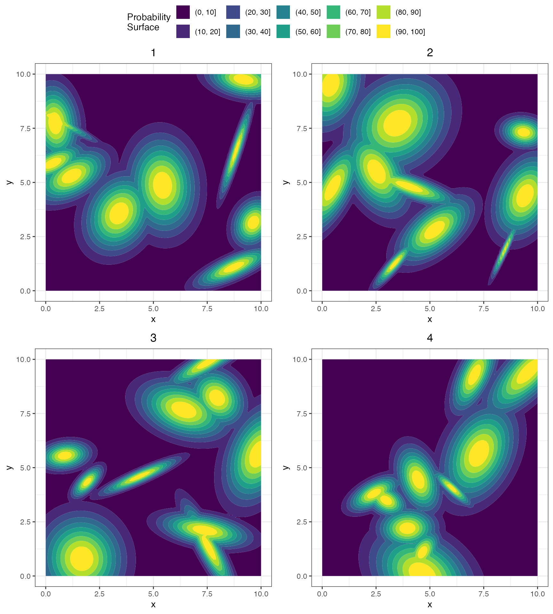

Background
Spatial Point Patterns
Spatial point patterns are the realization of spatial point process models. They are points that represent some feature, in our case cells but in ecological studies can be trees or plants, in space. Our space is 2-dimensional with an x and y axis with arbitrary units. Each point in the spatial point pattern can have marks - characteristics that describe information about the point. These marks can be things like whether it’s positive or negative for a specific phenotype or tissue, perhaps the size of the cell, or even the intensity of a fluorophore on the cells surface. The spatial point pattern can provide us with a great deal of information about a pathology when looking at cell spatial contexture.
In order to understand the cell contexture of a pathology, researchers can employ different spatial statistic methods that describe some feature of the spatial point pattern. A simple descriptive statistic of a spatial point pattern is lambda which describes the intensity. A large lambda means that there are a large number of points in a given boundary, and a small lambda means for the same boundary area there are less points. Another summary statistic is Ripley’s K(r) which describes how many other points of interest are within r of an anchor cell. This measurement can then be compared to different things like a complete spatial randomness (CSR) measurement to estimate how far the observed cell contexture deviates from random cell locations in the sample. In addition to Ripley’s K(r), there are several other methods such as a nearest neighbor G(r) function and an interaction variable developed by Steinhart et. al.
Simulating
In order to compare metrics for describing point patterns, we have developed this simulation package: scSpatialSIM. The main basis of the package is using Gaussian kernels to assign different characteristics to the underlying spatial point pattern. A Gaussian kernel is described in 3 different ways in our package: kernel’s center, standard deviation in the x-direction and standard deviation in the y-direction. There are k kernel means or centers in the point pattern which each has these descriptors. With the kernels for a spatial point pattern described and locations of points, the kernels can be used to give a probability to the points - closer to the center k the greater the probability for what the kernel is describing and farther away from any k center the lower the probability.
Having probabilities that range from 0 to 1 assumes kernel centers are ‘hot’ for the tissue/cell phenotype/hole, but in reality this is not always the case. Due to the inherent noise that we see with tissues at the cell level, we have provided the ability to limit the kernel center probability and increase the background probability. In addition to this making the simulations more realistic, this also allows for abundance control for cell phenotypes (lower max probability lower abundance).
Using scSpatialSIM
The process of simulating cell type data was streamlined in a similar
way to what one thinks of when thinking of real data. First, an S4
SpatSimObj object is initialized with all the slots that
are needed to proceed through the whole simulation process. Slots inside
are for kernels that describe tissue, holes, cell phenotypes, the
simulation window, and a tabular format of them. With the
SpatialSimulationObject() ready, the point patterns can be
simulated (these point patterns act as a ‘master’ for the next parts).
The point pattern as it is is similar to an extracellular matrix that
just has places for cells to go but no identity for the cells. Thinking
more broadly, we need to create tissue regions for our images which is
designated as either tissue 1 and tissue 2 (can be interpreted as tumor
or stroma). Separately, cell phenotypes can be assigned to each cell.
This is all done with separate kernels for each step which allows for
high customization and fine tuning of the simulated samples and the
spatial contexture. If parameters are changed from the initialized
values, then they will be stored in the object so in the future they can
be referred to again.
Spatial statistics are usually interested in the amount of clustering
points with a single mark type have. For example, it has been shown that
high abundance
but low clustering of cytotoxic T cells is associated with better
overall survival than missing cytotoxic T cells in high grade serous
ovarian cancer tumors. There are also instances that colocalization
of 2 difference cell types might be of interest such as T cell and B
cells in tumors. With scSpatialSIM, we provide methods to
perform both of these spatial point patterns. Input parameters dictate
the layout of a first cell type. In the case where more than one cell
type is wanted, a shift value is taken which uses the same kernel as the
first cell type (shift = 0) for strong colocalization or
moved the first cell types’ kernel towards Dirichlet vertices
(shift = 1) for segregation.
Univariate Simulation
In order to get started simulating cell type samples, we need to import the package.
library(scSpatialSIM)
#> scSpatialSIM Version:
#> 0.0.0.9000
#> _____ _ _ _ _____ _____ __ __
#> / ____| | | (_) | |/ ____|_ _| \/ |
#> ___ ___| (___ _ __ __ _| |_ _ __ _| | (___ | | | \ / |
#> / __|/ __|\___ \| '_ \ / _` | __| |/ _` | |\___ \ | | | |\/| |
#> \__ \ (__ ____) | |_) | (_| | |_| | (_| | |____) |_| |_| | | |
#> |___/\___|_____/| .__/ \__,_|\__|_|\__,_|_|_____/|_____|_| |_|
#> | |
#> |_|
#>
#> Fridley Lab Enjoy
set.seed(333) #reproducibilityTo create a simulation object, we can call
CreateSimulationObject(), which takes in 3 arguments that
will initialize the object for all downstream functions:
-
window- aspatstatowin object which is the boundary for which to simulate our points. The window acts as a mask so the functions know where to simulate points later on. -
sims- an integer value that is the number of samples that is wanting to be simulated -
cell_types- this is the number of different phenotypes to simulate, here we are only going to do a single cell type
If a window isn’t specified a built in 10x10 unit window will be
used. To make a custom window, we an use
spatstat.geom::owin
Let’s create our simulation object.
sim_object = CreateSimulationObject(sims = 9, cell_types = 1, window = custom_window)The simulation object has some attributes that are gradually filled
in as we progress. Using the summary() method, we can see
what our simulation object has inside and what we need to do next. Here,
we have 9 simulations with the default window and are wanting to perform
this for a single cell type. This method is really useful when fine
tuning parameters to get the desired output because it shows you exactly
what has already been done when loading in the base object from an RDS
file.
summary(sim_object)
#> Spatial Simulation object for 9 simulated images. Currently, there are:
#> Window: x (0,10); y (0,10)
#> 0 spatial point patterns
#> 0 tissue kernels
#> 0 hole kernels
#> 0 cell kernels for 1 cell typesNow that we have our simulation object and parameters set within, we
need to create the point pattern. The
GenerateSpatialPattern() function takes in the spatial
simulation object and a lambda, or intensity of the point
pattern. NOTE: with large windows and large lambdas, the size of
the spatial simulation object can grow fast so be mindful. Any
other parameters that could be passed to
spatstat.random::rpoispp can then be passed to
GenerateSpatialPattern() at the end. Again, we can check
how we are filling in our slots with summary() and even see
how our new process looks like with plot().
sim_object = GenerateSpatialPattern(sim_object)
summary(sim_object)
#> Spatial Simulation object for 9 simulated images. Currently, there are:
#> Window: x (0,10); y (0,10)
#> 9 spatial point patterns
#> 0 tissue kernels
#> 0 hole kernels
#> 0 cell kernels for 1 cell types
plot(sim_object, what = "Patterns", ncol = 1, nrow = 1, which = 1)#print only first point patternNext we will generate some regions of different tissue. For the
purpose here, tissue 1 will be tumor and tissue 2 will be stroma. There
are some parameters that are initialized when building the spatial
simulation that tells downstream functions how to simulate things on a
Gaussian kernel - GenerateTissue() is one of those. If
there is nothing supplied to the function when calling, it will default
to these values. Alternatively, can specify them in the function call.
These include regions within your window that you would like tissue
regions to be simulated, the number of regions, the standard deviation
range for how the probability falls off around the region centers, etc.
Something here is whether the ending kernel should be converted to a
heatmap and at what resolution. NOTE: the smaller the
step_size used for the heatmap the longer it takes to run
so be mindful.
After simulating the tissues we can look at the summary of the spatial simulation object to see the newly filled slot.
sim_object = GenerateTissue(sim_object, density_heatmap = T, step_size = 0.1, cores = 1)
#> Computing density heatmap
#> Computing tissue probability
summary(sim_object)
#> Spatial Simulation object for 9 simulated images. Currently, there are:
#> Window: x (0,10); y (0,10)
#> 9 spatial point patterns
#> 9 tissue kernels
#> 0 hole kernels
#> 0 cell kernels for 1 cell typesThe tissue kernel slot is now filled the number of kernels matching
number of spatial processes we have. Let’s take a look at the simulated
tissue kernels with PlotSimulation(). If using negative
ranges in the window, the function will use the overlap between default
GenerateTissue() range and the window. See documentation
for GenerateTissue() for more details.
PlotSimulation(sim_object, which = 1:4, ncol = 2, nrow = 2, what = "tissue heatmap")
The kernels are randomly laid about the simulation region and random
sizes within the constraints of the parameters provided. The number of
tissue regions simulated are fixed by the input k value,
and not sampled from a distribution centered at k. A larger
sdmin and sdmax would increase the sizes of
the tissue regions. See GenerateTissue() for more
information.
Generating holes can help assess the need for correcting metrics derived spatial statistics. For example, if there is a pond in the center of a field, crops are not able to be planted there yet measuring the amount of field there is just by the outside border will say that lots of crops should be able to fit. Sometimes, these things need to be adjusted for such as when you have tissue sections that are being stained and the second folds over or tears, leaving a large area where no longer cells are present. Even if not using holes for assessing metrics, performing them will just create a new column in the spatial files that can be later ignored. If holes are not needed at all, this can be skipped.
The parameters that go into GenerateHoles() is similar
to that of GenerateTissue() with one addition:
hole_prob or the proportion range of the point patterns
that could become holes. All of these parameters had defaults set when
the spatial simulation object was created, but can be overridden here is
a particular area of the process is wanted to have the holes and not the
rest. The number of holes is random as long as the sum of the area is
within the proportions above.
sim_object = GenerateHoles(sim_object, density_heatmap = T, step_size = 0.1, cores = 1)
#> Computing density heatmap
#> Computing hole probability
summary(sim_object)
#> Spatial Simulation object for 9 simulated images. Currently, there are:
#> Window: x (0,10); y (0,10)
#> 9 spatial point patterns
#> 9 tissue kernels
#> 9 hole kernels
#> 0 cell kernels for 1 cell typesLet’s see how the kernels for holes look. The center of the holes have the highest probability of being removed with a Bernoulli distribution of ‘hole’ or ‘not a hole’.
PlotSimulation(sim_object, which = 1:8, ncol = 2, nrow = 2, what = "hole heatmap")
#> $`1`#>
#> $`2`#>
#> attr(,"class")
#> [1] "list" "ggarrange"Next thing for us to do is to simulate the positivity of cells for a
phenotype using GenerateCellPositivity(). Just like holes
and the tissue, there are boundaries which the simulated positive cells
will fall in which are stored in the parameters. This is helpful for
going back and seeing what was done. However here, there are 2 different
parameters that help set the abundance (probs) and, in the
case of multiple cell types, how related those cell types are
(shift).
The probs parameter is used to scale the probabilities
for the cell type where the first number is away from kernel peaks and
the second is the maximum probability for a cell. For higher abundance,
the maximum probability can be set higher and even increase the minimum
probability. An issue with doing this on point patterns that have
multiple cell types is that they are not entirely informed of one
another when assigning cell types. B cells and T cells are distinct
phenotypes and therefore one cell shouldn’t be positive for
both. What we do, is use the probability with the Bernoulli distribution
so there’s a chance a single cell will be positive for 2 cell types,
even if the max probability is 0.1.
For univariate clustering, smaller standard deviations and higher
probability range will increase the amount of clustering. Large standard
deviations and low probabilities will make the clustering metrics low.
For univariate cell simulation, the shift metric does
nothing. The similarity of 2 or more cell types is controlled by the
shift value. A shift = 0 will use the same
kernel used for probabilities of Cell Type 1 for the other cell types,
and shift = 1 will move Cell Type 1 kernel so that cells
are segregated (with noise) to Dirichlet vertices when 3 or more kernel
centers are used.
sim_object = GenerateCellPositivity(sim_object, k = 4,
sdmin = 3, sdmax = 5,
density_heatmap = T, step_size = 0.1, cores = 1, probs = c(0.0, 0.1),
shift = 1)
#> Computing density heatmap for Cell 1
#> Computing probability for Cell 1
summary(sim_object)
#> Spatial Simulation object for 9 simulated images. Currently, there are:
#> Window: x (0,10); y (0,10)
#> 9 spatial point patterns
#> 9 tissue kernels
#> 9 hole kernels
#> 9 cell kernels for 1 cell typesIf we plot the simulation object now specifying we want to see the whole core, we can see our cells. There are little pockets of positive cells also with some noise.
PlotSimulation(sim_object, which = 1, what = "whole core")
Bivariate Simulation
The process for 2 or more cell types is essentially the same as for a
single cell type with the addition of the shift value when
simulating the cell types. Lets create another SpatSimObj
to get to the phenotype simulating step with
GenerateCellPositivity(). A great feature of
scSpatialSIM is that it works nicely with
magrittr and the pipe function to immediately pass output
from one function to the next.
#set seed
set.seed(333)
#create the new object
bivariate_sim = CreateSimulationObject(sims = 5, cell_types = 2) %>%
#produce the point pattern
GenerateSpatialPattern() %>%
#make tissues
GenerateTissue(density_heatmap = T, step_size = 0.1, cores = 1)
#> No `window` specified - defaulting to x (0, 10); y (0, 10)
#> Computing density heatmap
#> Computing tissue probabilityAs previously mentioned, we can specify a shift values
of 0 to use the same kernel for both cell types which will assign them
in such a way that will be identifiable as colocalized between Cell Type
1 and Cell Type 2. First, the low shift:
bivariate_sim_tmp = GenerateCellPositivity(bivariate_sim, k = 4,
sdmin = 3, sdmax = 5,
density_heatmap = T, step_size = 0.1, cores = 1, probs = c(0.0, 0.1),
shift = 0)
#> Computing density heatmap for Cell 1
#> Computing probability for Cell 1
#> Copying density heatmap for Cell 2
#> Computing probability for Cell 2
PlotSimulation(bivariate_sim_tmp, which = 1, what = "whole core")
We can see that in locations where Cell Type 1 is, Cell Type 2 is also present. There are a couple cells that are assigned as positive for both Cell Type 1 and Cell Type 2 which should be taken into consideration for next steps. If looking at colocalization of mutually exclusive cell types, these should be removed.
How does this compare with strong segregation between Cell Type 1 and Cell Type 2?
bivariate_sim_tmp = GenerateCellPositivity(bivariate_sim, k = 4,
sdmin = 3, sdmax = 5,
density_heatmap = T, step_size = 0.1, cores = 1, probs = c(0.0, 0.1),
shift = 1)
#> Computing density heatmap for Cell 1
#> Computing probability for Cell 1
#> Computing density heatmap for Cell 2
#> Computing probability for Cell 2
PlotSimulation(bivariate_sim_tmp, which = 1, what = "whole core")
In Tissue 2 it’s easier to see regions of only Cell Type 1 and regions of only Cell Type 2.
Exporting Data
Lastly, the data is likely wanted in tabular format. Since there are
multiple simulated point patterns, the function
CreateSpatialList() returns a list of data frames
containing cell x and y locations, the tissue that the cell belongs to,
whether the cell falls in a hole, and the positivity of the different
cell types.
spatial_list = CreateSpatialList(sim_object = bivariate_sim_tmp)
head(spatial_list[[1]])
#> x y Tissue Assignment Cell 1 Assignment Cell 2 Assignment
#> 1 5.7130558 1.274980 Tissue 1 0 0
#> 2 0.2011937 2.748664 Tissue 2 0 0
#> 3 7.2355739 6.800332 Tissue 2 0 0
#> 4 6.0939363 6.601037 Tissue 2 0 0
#> 5 3.0671935 2.480361 Tissue 1 0 0
#> 6 0.6350984 1.242892 Tissue 1 0 0Alternatively, there is the ability with
CreateSpatialList() to export all of the spatial pattern
data as a single data frame using single_df set to
TRUE. This adds an Image Name column that
keeps the spatial pattern data separate, and can split back into a list
later for use with SummariseSpatial(), which creates a core
level counts for the different cell types.
single_dataframe = CreateSpatialList(sim_object = bivariate_sim_tmp, single_df = TRUE)
head(single_dataframe)
#> Image Name x y Tissue Assignment Cell 1 Assignment
#> 1 Spatial Data 1 5.7130558 1.274980 Tissue 1 0
#> 2 Spatial Data 1 0.2011937 2.748664 Tissue 2 0
#> 3 Spatial Data 1 7.2355739 6.800332 Tissue 2 0
#> 4 Spatial Data 1 6.0939363 6.601037 Tissue 2 0
#> 5 Spatial Data 1 3.0671935 2.480361 Tissue 1 0
#> 6 Spatial Data 1 0.6350984 1.242892 Tissue 1 0
#> Cell 2 Assignment
#> 1 0
#> 2 0
#> 3 0
#> 4 0
#> 5 0
#> 6 0
summary_data = SummariseSpatial(spatial_list = spatial_list, markers = c("Cell 1 Assignment", "Cell 2 Assignment"))
head(summary_data)
#> # A tibble: 5 × 6
#> `Sample Tag` `Total Cells` `Cell 1 Assignment` `Cell 2 Assignment`
#> <chr> <int> <dbl> <dbl>
#> 1 Spatial Data 1 2495 129 130
#> 2 Spatial Data 2 2450 147 136
#> 3 Spatial Data 3 2500 143 101
#> 4 Spatial Data 4 2514 148 108
#> 5 Spatial Data 5 2486 130 91
#> # ℹ 2 more variables: `% Cell 1 Assignment` <dbl>, `% Cell 2 Assignment` <dbl>The spatial list and summary table can now be used with packages like spatialTIME to compute spatial statistics on all of the simulated data frames.